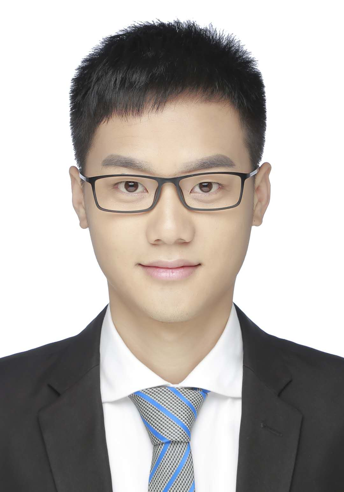

|  | Jianwang Zhai, Ph.D., Assistant Professor |
I am Jianwang Zhai (翟建旺 in Chinese), currently an assistant professor at Beijing University of Posts and Telecommunications (BUPT). Prior to that, I got my Ph.D. in Computer Science and Technology from Tsinghua University (THU) in 2023, and received my B.Eng. from Beijing Jiaotong University (BJTU) in 2018.
My research interests include machine learning and optimization methods with applications in EDA, especially power modeling, design space exploration, and physical design.
Machine Learning for EDA
Power Modeling
Design Space Exploration
Physical Design
Ph.D. Computer Science and Technology, Tsinghua University, Sep. 2018 - Jun. 2023
B.E. Communication Engineering, Beijing Jiaotong University, Sep. 2014 - Jun. 2018
* denotes equal contribution, # denotes corresponding author.
[C12] Zirui Li*, Kanglin Tian*, Jianwang Zhai#, Zixuan Li, Shixiong Kai, Siyuan Xu, Bei Yu, Kang Zhao, “FTAFP: A Feedthrough-Aware Floorplanner for Hierarchical Design of Large-Scale SoCs”, IEEE/ACM Asian and South Pacific Design Automation Conference (ASP-DAC), Tokyo, Jan. 20-23, 2025.
[C11] Guande Dong*, Jianwang Zhai*#, Hongtao Cheng, Xiao Yang, Chuan Shi, Kang Zhao#, “PIRLLS: Pretraining with Imitation and RL Finetuning for Logic Synthesis”, IEEE/ACM Asian and South Pacific Design Automation Conference (ASP-DAC), Tokyo, Jan. 20-23, 2025.
[C10] Jiawei Liu, Jianwang Zhai#, Mingyu Zhao, Zhe Lin, Bei Yu, Chuan Shi#, “PolarGate: Breaking the Functionality Representation Bottleneck of And-Inverter Graph Neural Network”, IEEE/ACM International Conference on Computer-Aided Design (ICCAD), New Jersey, Oct. 27-31, 2024.
[C9] Feng Guo*, Jiawei Liu*, Jianwang Zhai#, Jingyu Jia, Kang Zhao, Chuan Shi#, “PGAU: Static IR Drop Analysis for Power Grid using Attention U-Net Architecture and Label Distribution Smoothing”, ACM Great Lakes Symposium on VLSI (GLSVLSI), FL, USA, Jun. 12-14, 2024.
[C8] Zirui Li, Jianwang Zhai#, Zixuan Li, Zhongdong Qi, Kang Zhao, “Effective Resource Model and Cost Scheme for Maze Routing in 3D Global Routing”, IEEE International Symposium on Circuits and Systems (ISCAS), Singapore, May. 19-22, 2024.
[C7] Renjing Hou, Jianwang Zhai, Yajun Wang, Zhe Lin, Kang Zhao, “Array Partitioning Method for Streaming Dataflow Optimization in High-level Synthesis”, International Symposium of Electronics Design Automation (ISEDA), Xi'an, China, May. 10-13, 2024.
[C6] HongTao Cheng, Jiawei Liu, Jianwang Zhai, Mingyu Zhao, Cheng Yang, Chuan Shi, “SATGL: An Open-source Graph Learning Toolkit for Boolean Satisfiability”, International Symposium of Electronics Design Automation (ISEDA), Xi'an, China, May. 10-13, 2024.
[C5] Jingyu Jia, Jianwang Zhai#, Kang Zhao, “Fast Estimation for Electromigration Nucleation Time Based on Random Activation Energy Model”, IEEE/ACM Proceedings Design, Automation and Test in Europe (DATE), Valencia, Spain, Mar. 25-27, 2024.
[C4] Chen Bai, Jianwang Zhai#, Yuzhe Ma, Bei Yu#, Martin D.F. Wong, “Towards Automated RISC-V Microarchitecture Design with Reinforcement Learning”, AAAI Conference on Artificial Intelligence (AAAI), Vancouver, Canada, Feb. 20-27, 2024.
[C3] Jianwang Zhai, Yici Cai, Bei Yu, “Microarchitecture Power Modeling via Artificial Neural Network and Transfer Learning”, IEEE/ACM Asian and South Pacific Design Automation Conference (ASP-DAC), Tokyo Odaiba Miraikan, Jan. 16-19, 2023. (Best Paper Award Nomination)
[C2] Jianwang Zhai, Chen Bai, Binwu Zhu, Yici Cai, Qiang Zhou, Bei Yu, “McPAT-Calib: A Microarchitecture Power Modeling Framework for Modern CPUs”, IEEE/ACM International Conference on Computer-Aided Design (ICCAD), Nov. 01-04, 2021.
[C1] Chen Bai, Qi Sun, Jianwang Zhai, Yuzhe Ma, Bei Yu, Martin D.F. Wong, “BOOM-Explorer: RISC-V BOOM Microarchitecture Design Space Exploration Framework”, IEEE/ACM International Conference on Computer-Aided Design (ICCAD), Nov. 01-04, 2021. (William J. McCalla Best Paper Award)
[J5] Jianwang Zhai, Zichao Ling, Chen Bai, Kang Zhao, Bei Yu, “Machine Learning for Microarchitecture Power Modeling and Design Space Exploration: A Survey ”, Journal of Computer Research and Development (J-CRAD), vol. 61, no. 06, pp. 1-19, 2024. (in Chinese)
[J4] Chen Bai, Qi Sun, Jianwang Zhai, Yuzhe Ma, Bei Yu, Martin D.F. Wong, “BOOM-Explorer: RISC-V BOOM Microarchitecture Design Space Exploration”, ACM Transactions on Design Automation of Electronic Systems (TODAES), vol. 29, no. 01, pp. 1-23, 2024.
[J3] Jianwang Zhai, Yici Cai, “Microarchitecture Design Space Exploration via Pareto-driven Active Learning”, IEEE Transactions on Very Large Scale Integration Systems (TVLSI), vol. 31, no. 11, pp. 1727-1739, 2023.
[J2] Jianwang Zhai, Chen Bai, Binwu Zhu, Yici Cai, Qiang Zhou, Bei Yu, “McPAT-Calib: A RISC-V BOOM Microarchitecture Power Modeling Framework”, IEEE Transactions on Computer-Aided Design of Integrated Circuits and Systems (TCAD), vol. 42, no. 01, pp. 243-256, 2023.
[J1] Jianwang Zhai, Yici Cai, Qiang Zhou, “Placement and Routing Methods Considering Shape Constraints of JTL for RSFQ Circuits”, IEEE Transactions on Circuits and Systems II: Express Briefs (TCAS-II), vol. 68, no. 5, pp. 1571-1575, 2021.
Best Paper Award Nomination, ASP-DAC, 2023
William J. McCalla Best Paper Award, ICCAD, 2021
Huawei Scholarship, Tsinghua University, 2022.
Longfor Scholarship, Tsinghua University, 2022.
Comprehensive Excellent Scholarship, Tsinghua University, 2020 & 2021.
Outstanding Graduate, The Education Committee of Beijing, 2018.
May 4th Medal, Beijing Jiaotong University, 2018.
Excellent Student, The Education Committee of Beijing, 2017.
Baosteel Scholarship, Baosteel Education Foundation, 2017.
National Scholarship, Ministry of Education of China, 2016.
National Encouragement Scholarship, Ministry of Education of China, 2015.
IEEE Transactions on Computer-Aided Design of Integrated Circuits and Systems (TCAD)
IEEE Transactions On Very Large Scale Integration (VLSI) Systems (TVLSI)
IEEE Transactions on Circuits and Systems Part II: Express Briefs (TCAS-II)
Integration, the VLSI Journal (VLSIJ)
IEEE Journal of Exploratory Solid-State Computational Devices and Circuits (JXCDC)